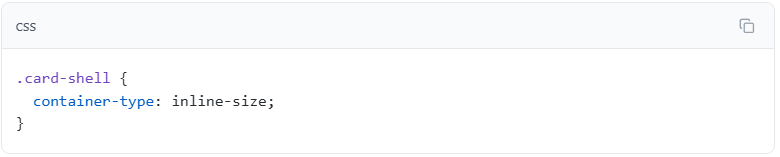
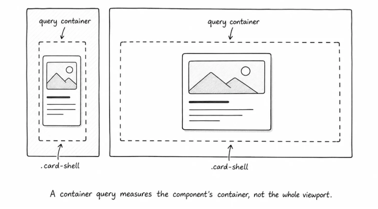
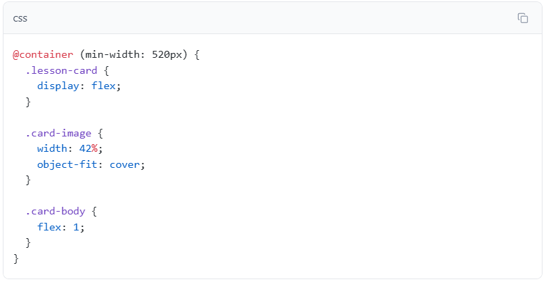

Featured
Container queries
Adapt a component based on the space around it, not only the viewport.
Open lessonCSS practice
The same component can have different amounts of space depending on where it appears.
Featured
Adapt a component based on the space around it, not only the viewport.
Open lessonBefore CSS can query an element's size, you need to mark that element as a query container.
Mark .card-shell as the container:

container-type: inline-size says this element can be queried by its inline size.
In normal English-language pages, inline size means width. So for this lesson, read it as: "allow CSS to query how wide .card-shell is."
This rule does not style the card visually by itself. It gives the browser permission to use .card-shell as a measurable container.

Now that .card-shell is a query container, CSS can ask whether that container is wide enough for a different card layout.
Add the container query:

@container (min-width: 520px) means "use these rules when the nearest query container is at least 520px wide."
The sidebar .card-shell is narrower than 520px, so its card stays stacked.
The workspace .card-shell is wider than 520px, so its card becomes a side-by-side layout.
Inside the query, .lesson-card becomes a flex container. The image and body become flex items.
width: 42% gives the image a clear share of the row. It is not exactly half because text often needs a little more room than the image.
object-fit: cover keeps the image from looking stretched when it shares a row with the text. The image may crop slightly, but it keeps its proportions.
flex: 1 lets .card-body take the remaining space.
This is the core container-query habit: let the component stay simple in narrow containers, then enhance it when its own container has enough room.
Media queries create viewport breakpoints, while container queries create component breakpoints.
That difference is practical because the two tools ask different questions:
| Question | Use |
|---|---|
| Is the browser wide enough for the whole page layout to change? | Media query |
| Is this card's container wide enough for the card layout to change? | Container query |
| Should the header, page shell, or main navigation change? | Media query |
| Should a reusable card, panel, or widget change based on where it appears? | Container query |
A container query does not replace every media query; it solves a different problem.
Use container queries for reusable components - If the same component can appear in a narrow sidebar, a wide content area, or a dashboard panel, a container query often fits better than a viewport media query.